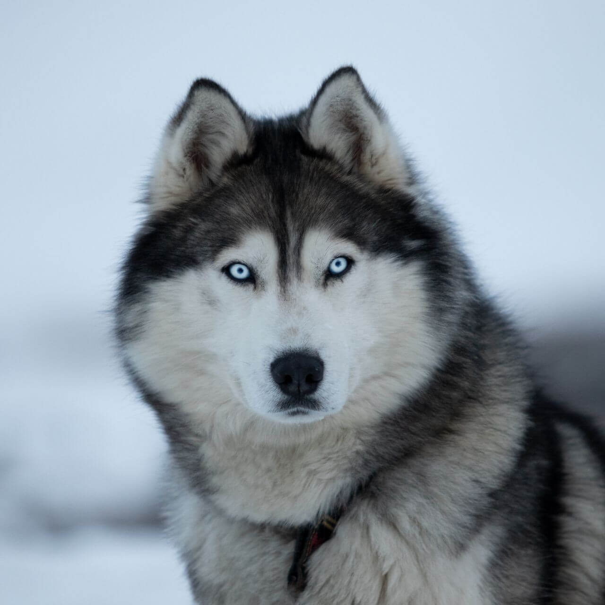
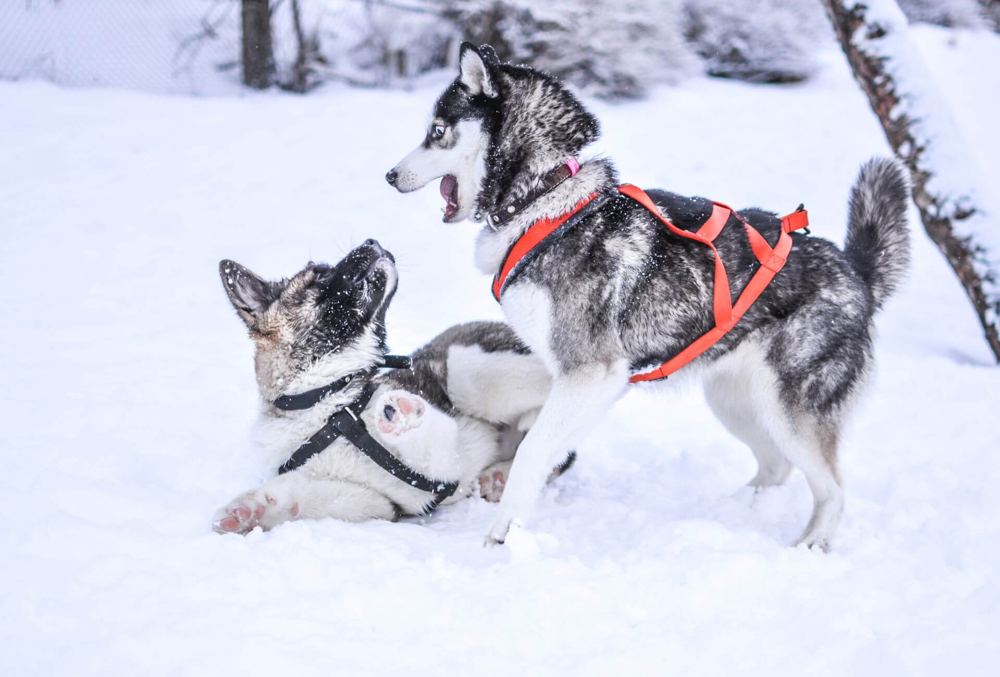
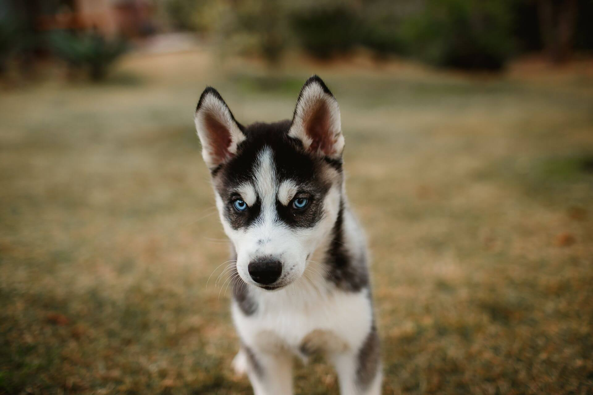
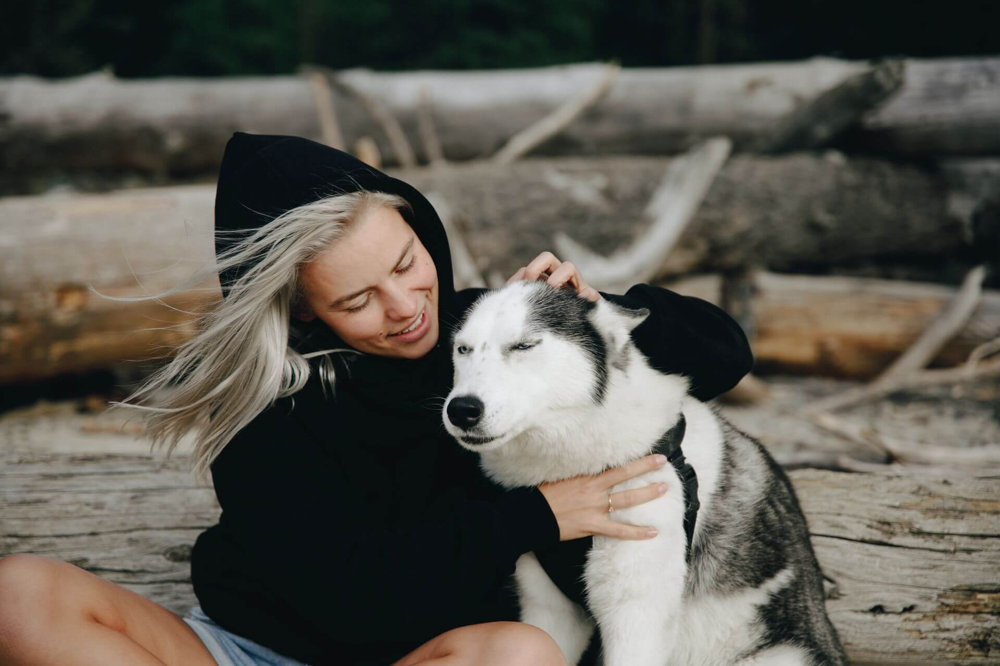

Сибирский хаски
Выносливая ездовая собака с волчьей внешностью и характером марафонца. Дружелюбная почти ко всем, но своевольная и созданная для движения, а не для охраны и не для дивана.

- Вес
- 21–28 кг
- Рост в холке
- 54–60 см
- Жизнь
- 12–15 лет
- Энергия
- Очень высокая
- Линька
- Сильная
Характер
Сибирский хаски это ездовая собака родом с северо-востока Сибири, выведенная для бега в упряжке на длинные дистанции. Отсюда её главные черты: выносливость, лёгкость и неутомимая тяга к движению. Это дружелюбная и общительная собака, искренне радующаяся людям, в том числе незнакомым, поэтому на роль охранника хаски совершенно не годится.
С другими собаками хаски обычно ладит легко, ведь по природе это стайное животное, привыкшее работать в команде. А вот с мелкими домашними питомцами стоит быть осторожнее: охотничий инстинкт в породе силён, и кошку или грызуна хаски может принять за добычу. Ранняя социализация помогает сгладить эти моменты.
Стоит знать и о других особенностях характера. Хаски умна, но независима и своевольна: она прекрасно понимает команды, но выполняет их, только если видит в этом смысл, поэтому дрессировка требует терпения. Это прирождённый бегун и мастер побегов, способный перепрыгнуть забор или сделать подкоп, а оставшись без движения и компании, хаски начинает скучать и шалить.
Есть у породы и яркая узнаваемая черта. Хаски почти не лает, зато выразительно «поёт»: воет, ворчит и издаёт звуки, очень похожие на человеческую речь. Этот волчий говор одна из самых обаятельных особенностей породы.
Характеристики
Размер
Среднего размера собака. Кобели весят примерно от 21 до 28 килограммов при росте 54–60 сантиметров в холке, суки легче и ниже.
Шерсть
Густая двойная с мягким подшёрстком, без характерного запаха. Сезонная линька обильная, особенно весной.
Энергия
Очень высокая. Хаски нужны долгие активные прогулки, бег и нагрузка каждый день.
Обучаемость
Умная, но своевольная. Слушается при терпеливом и мотивирующем подходе, скучного послушания от неё ждать не стоит.
Отношение к детям
Дружелюбна и игрива с детьми, но из-за активности и силы малышей с ней лучше не оставлять без присмотра.
Здоровье
Хаски порода с крепким здоровьем, закалённым веками работы в суровом климате. Но есть наследственные слабые места, о которых стоит знать и проверять линию у заводчика.
Болезни глаз
Катаракта, глаукома и дистрофия сетчатки встречаются в породе чаще среднего. Нужны регулярные осмотры у офтальмолога.
Дисплазия суставов
Тазобедренный сустав под нагрузкой, риск снижают контроль веса и проверка родителей.
Щитовидная железа
Возможны нарушения её работы, что сказывается на весе, активности и состоянии шерсти.
Окрасы
Окрасы хаски очень разнообразны, от чисто белого до чёрного, с самыми разными сочетаниями. Почти всегда на голове есть светлая «маска», характерная именно для этой породы.

Глаза хаски бывают голубыми, карими, янтарными, а иногда разными. Гетерохромия для породы абсолютно нормальна.
Кому подходит
Хаски станет прекрасным спутником для активного человека, который любит спорт, долгие прогулки и готов проводить с собакой много времени. Эта порода расцветает там, где есть движение, бег и совместные приключения, и платит за это безграничной дружелюбностью.
Сложно с хаски придётся тем, кто ищет охранника, послушного с первого слова компаньона или собаку для спокойной размеренной жизни. Без нагрузки и внимания хаски тоскует, убегает и находит себе шумные разрушительные занятия.
Хаски в жизни


